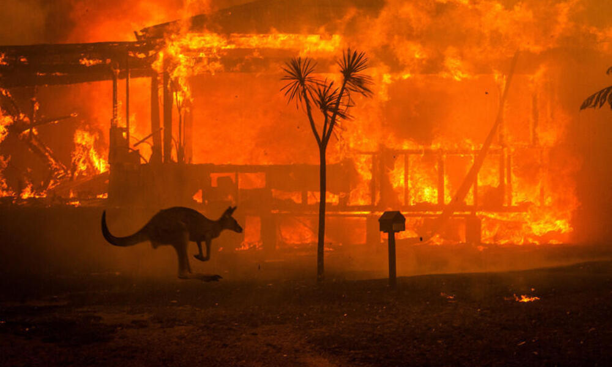

Australia
Australia sufre su peor ola de calor en décadas, con temperaturas récord que aumentan los incendios forestales

Australia ha registrado temperaturas sin precedentes, con olas de calor que han alcanzado máximos históricos en regiones como Nueva Gales del Sur y Victoria. Los incendios forestales están arrasando grandes extensiones de tierra, obligando a evacuaciones masivas y causando daños devastadores en la vida silvestre y propiedades.